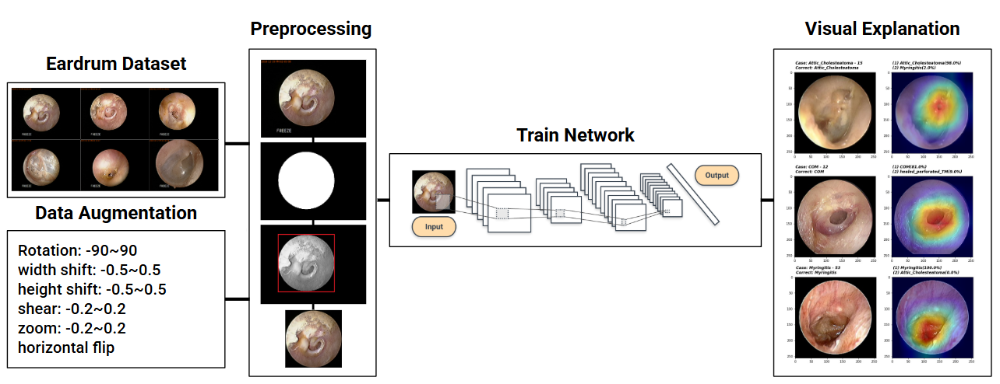

Tympanic Membrane Endoscopy Image Classification
고막 내시경 이미지의 병변을 자동 분류하는 앙상블 딥러닝 모델. VGG16, ResNet, DenseNet, EfficientNet 앙상블로 95.8% 정확도를 달성하고 Grad-CAM 활성화 맵으로 임상가 대상 검증 UI를 설계. PLOS ONE 게재 (Choi et al., 2022).
Skills & Technologies
Overview
7,156장의 중이염 정상 및 질환 이미지 데이터 기반 딥러닝 분류 (정확도 95.8%) Matlab 및 Python의 numpy, scikit-image, opencv 라이브러리를 통해 원본 이미지를 input 형태에 맞게 부동 소수형 텐서로 변환하여 딥러닝을 위한 이미지 전처리 과정 수행. VGG16, ResNet, DenseNet, EfficientNet 등의 CNN 모델에 Transfer Learning을 적용한 네트워크 학습 및 Data Augmentation 수행. Matplotlib, seaborn 라이브러리 및 grad-cam을 통한 테스트 결과 시각화.

Publication
Choi Y., Chae J., Park K., Hur J., Kweon J., Ahn J. (2022). Automated multi-class classification for prediction of tympanic membrane changes with deep learning models. PLOS ONE. [SCIE]
Key Achievements
• 다중 분류 정확도 95.8% 달성 (4-모델 앙상블)
• Grad-CAM 기반 임상 해석 가능성 UI 설계
• PLOS ONE 게재 (SCIE)